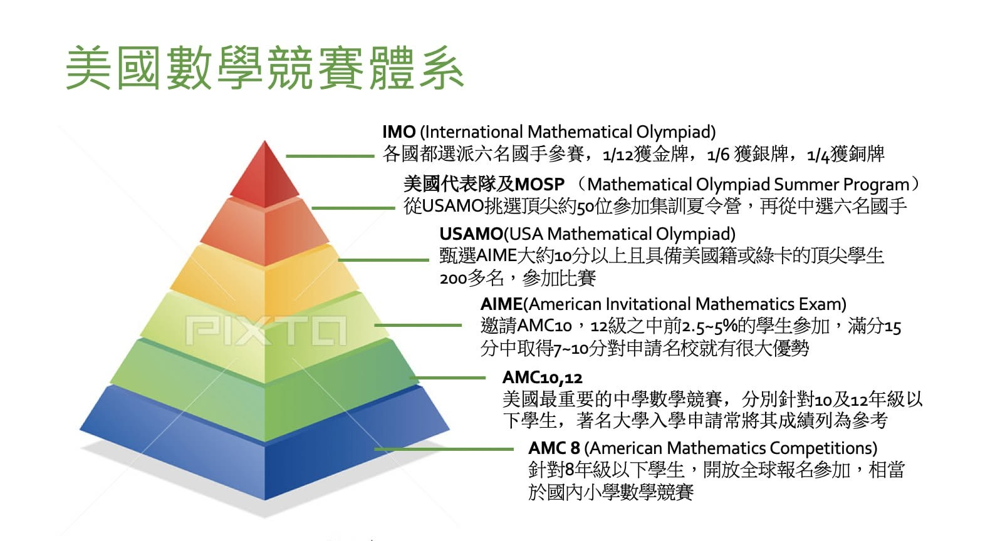

美國數學競賽體系簡介
撰文 獵豹老師

近年來AMC愈來愈受到注意。AMC是American Mathematics Competitions的簡稱，這是一個源自美國、面向全球初高中生開放的普及型數學競賽，每年全球有數十萬個中學生參加，可以說是全球參與人數最多、最具權威性及公正性的中學數學競賽，美國頂尖大學都參考其成績做為入學評判依據，在台灣更是極少數數學領域取得高中生學習歷程證照代碼的競賽，它受歡迎的程度，可想而知。目前在台灣地區是由九九文教基金會主辦，長期以來一直有很好的口碑。(有家長建議我們特別說明，因為有些家長並不熟悉相關競賽。台灣AMC數學競賽一般來說有兩個，此處AMC指美國數學協會MAA舉辦的競賽，而不是澳洲的AMC。)
許多人把各種數學競賽包括AMC跟「奧數」都畫上等號或者至少視為差不多的東西，但其實近年來國際上各種數學競賽百花齊放，從競賽目的到競賽內容，差異很大。
真正的奧數International Mathematical Olympiad(簡稱IMO)，通常翻譯成國際數學奧林匹克(亞)，是全球最著名、最大規模、難度最高的國際高中生數學競賽，它不是一種普及型的數學競賽，是經過層層選拔、每個國家只選出六名最頂尖的選手參賽的一種高難度比賽，不是任何人可以報名參加的，其題目又少又難(六題做兩天九小時)，需要學習大量特殊技巧，若沒有經過特別訓練，即使是一般數學學霸甚至是老師，可能一題也答不出來，所以說它不是個普及型的競賽。
但AMC不同，它先依不同年級的學習範圍分成了AMC8、10、12三級考試，也就是分別針對八年級以下、十年級以下、十二年級以下的學生開放參賽，測驗的知識點完全在中學範圍，而且它題目多(二十五題)，難度是逐漸增加的，前面簡單的部分一般的學生也有能力解，後面部分的難題才會有挑戰性，所以不同程度的孩子都可以得到相對應的分數，不會像奧數一樣完全束手無策，故非常適合大眾參與，甚至可以視為是一種能力的檢定。
而正是因為這樣的特性，近年來全球各國愈來愈多的老師都鼓勵學生參加這樣的競賽，而許多美國著名的大學，包括最頂尖的Harvard、MIT、Stanford、CMU、Caltech…等，在審查入學申請文件時，也都會參考學生AMC10/12的競賽成績，有的學校甚至在申請表格上就直接列出option欄位，讓申請者自行填寫。
在AMC之上，有一個難度更高的競賽叫做美國數學邀請賽American Invitational Mathematics Examination，簡稱AIME，它仍然是對全球開放，但只邀請AMC10前2.5%跟AMC12前5%的頂尖學生參加，是一個封閉性的競賽。能晉級到這個競賽，表示已經擁有相當傑出的數學實力，而且通常也表示學生擁有長期鑽研一個學科的專注持久力，也所以在申請名牌大學時，能夠受邀參加AIME甚至能夠得到佳績，已經是一個明顯加分的項目，尤其申請理工科系，這些相關紀錄都是非常受到歡迎的。
接著，在全球參加AIME競賽的學生中，會針對擁有美國籍或者綠卡者，挑選出成績最頂尖的200多人(加權AMC及AIME的成績)，參加美國數學奧林匹克USAMO/USAJMO，這就是美國境內最高等級的中學生數學競賽了，一般來說學生能夠獲得USAMO/USAJMO參賽資格，已經可以做為MIT等頂級牛校的加分利器。
這裡限制美國綠卡或公民身份主要原因是USAMO/USAJMO已經是要為美國挑選參加IMO的國手了，所以必須限制國籍資格。在這些參賽選手中，最優秀的前50名會被選出參加Summer Program集訓夏令營，經過夏令營的訓練與甄選，最後會選出6名國手，代表美國參加本文第三段提到的IMO，與全球高手一起競逐桂冠。而在所有參賽者中，表現最佳的1/12會獲頒金牌，次佳的1/6會獲頒銀牌，還有1/4會獲頒銅牌。
這就是美國最主要的數學競賽體系以及其IMO國手的選拔程序，可以看出AMC身兼兩個重任，一是普及性的數學能力檢測，二是做為美國IMO國手的第一階選拔基礎，也所以AMC在全球都受到很大的重視，而且可以吸引許多頂尖名校數學教授參與研發支持，這也是AMC成為全球最高品質、也最受信賴與重視的數學比賽之一的原因。
今天先分享到這裡，希望對大家有幫助。